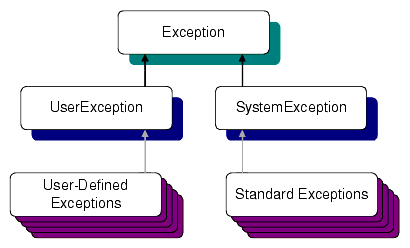
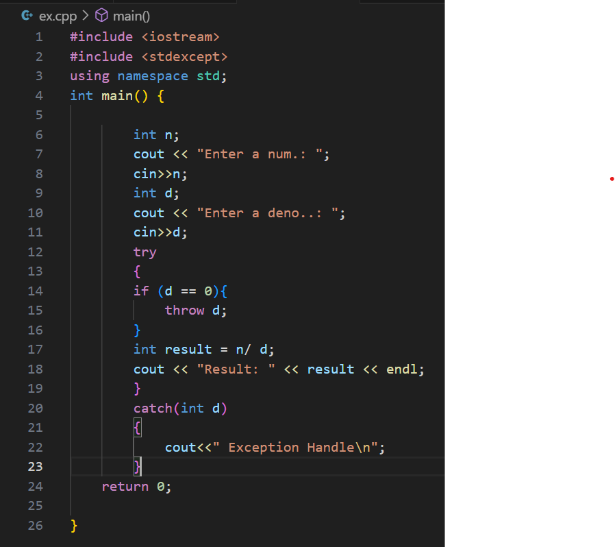

Exception handling in C++ is a mechanism that allows you to gracefully handle and recover from exceptional or unexpected situations that may occur during the execution of a program. These exceptional situations, often referred to as exceptions, can be runtime errors, such as division by zero, array index out of bounds, or memory allocation failures.
Exception Handling
Explanation
In C++, exception handling is based on three main keywords: try, catch, and throw. try: The try block is used to enclose the code that may potentially throw an exception. When an exception occurs within the try block, the program's normal flow of execution is interrupted, and the control is transferred to the nearest catch block (if one exists) that can handle the specific type of exception. catch: The catch block is where you handle exceptions. It follows the try block and specifies the type of exception it can catch. If an exception of the specified type is thrown within the try block, the program will transfer control to the corresponding catch block. You can have multiple catch blocks for different types of exceptions within the same try block.
The program is a C++ application that demonstrates the use of exception handling. It includes a try block where it attempts to perform a division operation, and if the denominator is zero, it explicitly throws a std::runtime_error exception. In the event of an exception, the program catches it in a catch block, prints an error message, and continues its execution. This illustrates how to gracefully handle exceptions and separate error-handling logic from the main program flow.
Program
The program's output will depend on the values of the numerator and denominator variables. If denominator is not equal to zero, the program will successfully perform the division, and it will print the result. However, if denominator is set to zero, an exception will be thrown within the try block, and the program will jump to the catch block to handle the exception. In this case, it will print an error message, specifically "Exception caught: Division by zero is not allowed.".